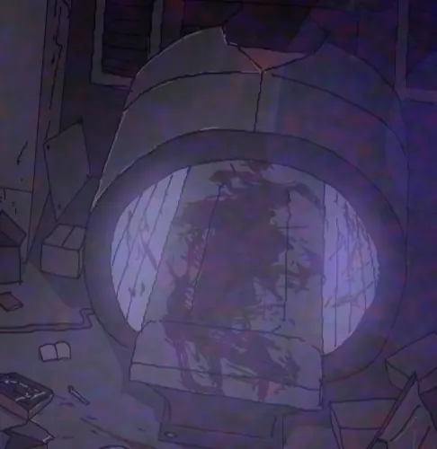

기록 열람
피의 호수 부검 기록
Unknown_Record2_860205
기록면 단위로 분할된 내부 열람 문서이다.
기록면을 선택해서 열람하십시오.
Blood Lake Autopsy Record
Blood Lake Autopsy Record
U.A.C오컬트 생명 과학 부서
녹음파일#088
19xx/xx/02
지역:아오[검열]하라
관련 개체:피의 호수 / Blood Lake
피해자:현장 촬영팀 - 마렌 예거트
기록 형태:부검 녹음파일 / 법의학 기록 / 생체 이상 분석 자료
보안 등급:기밀
위험도:High
본 문서는 불멸을 향해 / Blood Lake Incident File 이후 회수된 피해자 마렌 예거트의 시신을 대상으로 진행된 부검 녹음 기록이다
피해자의 시신에서는 일반적인 사망 후 부패 과정과 다른 이상 반응이 확인되었으며, 일부 장기와 조직에서 정체불명의 배양체와 균주성 반응이 발견되었다
해당 기록은 피의 호수, 혈액성 잔류물, 부패 정지 현상, BL-088 균주 임시 분류와 관련된 자료로 보관된다

이송 기록
이송 과정
지원 요청을 확인한 후 출동한 A.R.F 회수 지원 병력과 C.P.D 외곽 통제 인력이 피해자를 발견하였다
피해자는 피의 호수 인근 지역에서 회수되었으며, 회수 당시 신체 조직 손상과 혈액성 잔류물 부착이 심각한 상태였다
현장 회수팀은 피해자의 신원표식과 촬영 장비 일부를 함께 확보하였으나, 장비 내부 기록은 손상되어 일부만 복구되었다
피해자의 시신은 U.A.C 오컬트 생명 과학 부서로 이송되었으며, 일반 부검 절차가 아닌 생체 이상 반응 분석 절차에 따라 격리 부검이 진행되었다
회수 상태
피해자:마렌 예거트
성별:여성
추정 나이:21세 ~ 24세
사망 추정 시점:부검 기준 약 6일 전
시신 상태:심각한 조직 손상 / 장기 부패 / 일부 부패 정지 반응
부착물:혈액성 잔류물 / 미확인 배양체 / 점성 조직 흔적
격리 상태:생체 위험 격리실 보관
녹음파일#088
검시관
레이널즈 오웬
법의학 조사관
스테파니
부검 소견
외상 소견
피해자의 신체에는 다수의 절단, 파열, 조직 손상 흔적이 확인되었다
일부 손상은 야생 동물 또는 괴이 개체에 의한 공격과 유사하지만, 일부 절단면은 일반적인 물리 외상과 일치하지 않는다
특정 부위는 찢기거나 뜯긴 것이 아니라, 내부 조직이 먼저 붕괴한 뒤 외피가 뒤따라 무너진 것처럼 보인다
소화기관 복원 결과
소화기관은 심각하게 손상되어 있었으나, 일부 복원 결과 피해자가 사망 전 상당 기간 정상적인 음식물을 섭취하지 못한 상태였던 것으로 확인되었다
위 내용물은 거의 남아 있지 않았으며, 일부 조직에서는 혈액성 잔류물과 점성 물질이 확인되었다
사망 원인은 일차적으로 영양실조로 추정되나, 단독 사망 원인으로 보기에는 신체 손상과 생체 반응이 비정상적이다
부패 정지 현상
피해자의 시신에서는 부패가 진행된 조직과 부패가 중단된 조직이 동시에 확인되었다
일부 장기는 완전히 부패했으나, 특정 조직은 사망 후 시간이 경과했음에도 비정상적으로 보존되어 있었다
외부 방부 처리 흔적은 발견되지 않았으며, 부패 정지 반응은 체내에서 발생한 것으로 추정된다
조직 배양체 발견
복원된 장기 일부의 표면에서 균류성 막 또는 배양체와 유사한 미확인 조직이 확인되었다
해당 조직은 일반적인 곰팡이나 부패균 반응과는 다르게, 죽은 조직을 기반으로 증식하면서도 일부 생체 반응을 보였다
샘플은 별도 격리 용기에 보관되었으며, 임시 분류명 BL-088이 부여되었다
BL-088 균주
임시 분류
명칭: BL-088
분류: 미확인 변이 균주 / 혈액성 부패 억제 반응체
출처: 마렌 예거트 시신 내부 조직
관련 사건: 피의 호수 사건
보관 기관: U.A.C 오컬트 생명 과학 부서
공유 범위: F.H.C 제한 공유
관찰 결과
BL-088은 처음에는 슈도모나스 플루오레스센스균 계열의 집합체로 의심되었으나, 반응 양상은 단순 고초균의 돌연변이 균주에 더 가까운 것으로 보인다
그러나 일반적인 고초균 반응과 달리 완전한 양성 반응을 보이지 않았으며, 죽은 조직을 기반으로 비정상적인 배양 반응을 나타냈다
일부 샘플은 부패를 억제하는 듯한 반응을 보였으나, 동시에 주변 조직을 변성시키는 현상도 확인되었다
위험 가능성
- 사망 후 조직 배양 가능성
- 부패 정지 또는 지연 반응
- 혈액성 잔류물과의 상호작용 가능성
- 피의 호수와 관련된 생체 반응 가능성
- 죽은 조직을 기반으로 증식 가능성
- 일반 부패균과 다른 오컬트성 생체 반응 가능성
- 괴이 개체 또는 혈액성 이동 개체와의 연결 가능성
피의 호수 관련성
혈액성 잔류물
피해자의 신체와 장기 일부에서는 혈액성 잔류물이 확인되었다
해당 잔류물은 일반 혈액과 달리 점성이 높고, 일부 구간에서 외부 조직에 달라붙어 막을 형성하는 특성을 보였다
이는 혈교의 혈액 의식, 피의 호수, 혈액 저장소, 또는 혈액성 이동 개체와 연결될 가능성이 있다
피의 호수 반응
피의 호수는 단순한 대량 혈액 웅덩이가 아니라, 특정한 생체 반응과 이동성, 저장성, 감염성 또는 배양성을 가진 현상으로 추정된다
마렌 예거트의 시신에서 확인된 BL-088은 피의 호수 내부에서 발생한 반응이 시신 내부에 남은 사례일 가능성이 있다
괴이 개체와의 연결
BL-088이 괴이 개체를 직접 발생시키는지는 확인되지 않았다
그러나 해당 균주가 죽은 조직을 보존하거나 변형시키는 성질을 가진다면, 사망자 잔류형 개체, 혈액성 이동 개체, 피호수인과 연결될 가능성이 있다
Blood Laker와 피의 호수 오염
피의 호수 부검 기록은 Blood Gate Classification, Feral Naming System, Black Tag Protocol을 흡수한다. 이 사건에서 확인되는 혈액성 변이는 Blood Laker 계열의 기준 사례로 사용할 수 있다.
- Blood Laker : 피의 호수 사건 이후 기록된 혈액성 변이 개체
- Gate Residue : 피의 문이 닫힌 뒤 남은 검은 혈흔과 붉은 균열
- CI-H 상승 : 사체 또는 피해자의 인체 오염 반응
- CI-E 상승 : 괴이화 개체 반응
- Black Tag 검토 : 부검 이후에도 사체 위치와 반응이 불일치할 때 적용
부검 제한 기준
피의 호수 계열 사체는 일반 부검실에서 완전 개방하지 않는다. 혈액이 응고되지 않거나, 샘플이 반복적으로 같은 형태로 재생되면 F.H.C 검시가 중단되고 Ash Crew 처리가 검토된다.